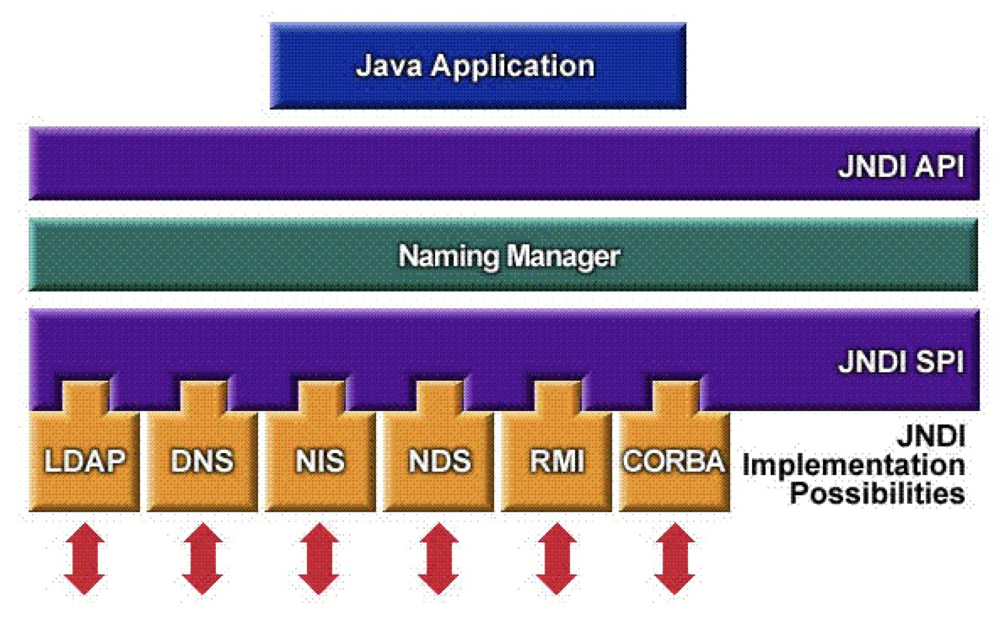

JNDI - Java Naming and Directory Interface
目录：
1.简介
JNDI(Java Naming and Directory Interface，Java命名和目录接口)是一组在Java应用中访问命名和目录服务的API。命名服务将名称和对象联系起来，使得我们可以用名称访问对象。
JNDI类似于JDBC一样,提供了一系列编程接口,用来规范命名服务中对象的创建和管理,通过JNDI可以实现对象的创建与托管,和对象的使用过程完全解耦.
比如:在application的底层创建对象,并将对象bind到特定的context中,对象的创建过程或者"查找"方式只有此底层模块支持,外部程序不可见.对于对象的使用者(调用者)只能通过JNDI的方式获取对象,对象使用者无法直接创建对象等.
在JMS，JMail,JDBC,EJB等技术中，就大量应用的这种技术。JNDI可访问的现有的目录及服务有：DNS、XNam 、Novell目录服务、LDAP(Lightweight Directory Access Protocol 轻型目录访问协议)、 CORBA对象服务、文件系统、Windows XP/2000/NT/Me/9x的注册表、RMI、DSML v1&v2、NIS。
jndi诞生的理由似乎很简单。随着分布式应用的发展，远程访问对象访问成为常用的方法。虽然说通过Socket等编程手段仍然可实现远程通信，但按照模式的理论来说，仍是有其局限性的。RMI技术，RMI-IIOP技术的产生，使远程对象的查找成为了技术焦点。JNDI技术就应运而生。JNDI技术产生后，就可方便的查找远程或是本地对象。
就是不要在程序中直接new资源。而是把资源的配置放到程序之外(配置文件)，通过JNDI来管理资源对象。

如图，从下往上看。JNDI SPI厂商都有对应的LDAP，DNS，NIS等的实现。这些技术几乎都涉及到资源的使用。这些资源对象统一由Naming Manager进行管理。程序只需要使用JNDI API通过资源名称获取相应的资源即可。
2.实例
使用JDBC连接数据库：
Connection conn=null;
try {
Class.forName("com.mysql.jdbc.Driver", true, Thread.currentThread().getContextClassLoader());
conn=DriverManager.getConnection("jdbc:mysql://MyDBServer?user=xxx&password=xxx");
......
conn.close();
} catch(Exception e) {
e.printStackTrace();
} finally {
if(conn!=null) {
try {
conn.close();
} catch(SQLException e) {}
}
使用JNDI做法：
配置数据源:(配置数据源的位置根据具体的web服务器决定)
<?xml version="1.0" encoding="UTF-8"?>
<datasources>
<local-tx-datasource>
<!--JNDI 名称-->
<jndi-name>MySqlDS</jndi-name>
<connection-url>jdbc:mysql://localhost:3306/lw</connection-url>
<driver-class>com.mysql.jdbc.Driver</driver-class>
<user-name>root</user-name>
<password>rootpassword</password>
<exception-sorter-class-name>org.jboss.resource.adapter.jdbc.vendor.MySQLExceptionSorter</exception-sorter-class-name>
<metadata>
<type-mapping>mySQL</type-mapping>
</metadata>
</local-tx-datasource>
</datasources>
使用JNDI连接数据库：
Connection conn=null;
try {
Context ctx = new InitialContext();
Object datasourceRef = ctx.lookup("java:MySqlDS");
//引用数据源
DataSource ds = (Datasource) datasourceRef;
conn = ds.getConnection();
......
c.close();
} catch(Exception e) {
e.printStackTrace();
} finally {
if(conn!=null) {
try {
conn.close();
} catch(SQLException e) {}
}
这样的好处就是，不需要在程序中管理资源的配置的具体信息。如果遇到更改资源配置的场景，只需要更改配置，而不需要更改代码。
辨析：context.lookup("java:comp/env/XXX")和context.lookup("XXX")的区别。
Answer：context.loopup("java:comp/env/XXX")只能用在J2EE环境，也就是Web项目。而context.lookup("XXX")可以用在任何环境，只需要"XXX"是一个JNDI资源名字即可。
3.总结
1.了解JNDI
2.了解JNDI的架构
3.了解JNDI思想：将由JNDI管理的资源以：名字-资源对象 的方式管理起来，程序通过名字来检索对象。
4.了解JNDI例子